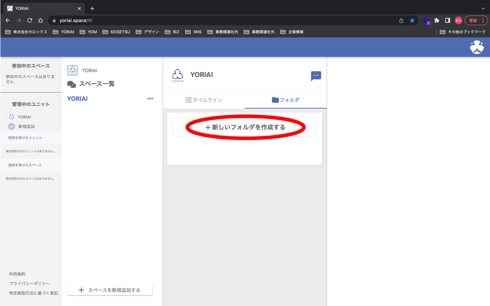

※ 先にタイムラインにファイル・写真・動画を投稿している必要があります。
1. スペースのトップページからフォルダを選択します。
2. 「＋新しいフォルダを作成する」を選択します。
3. フォルダの名称を入力し、「次へ」を選択します。
4. 任意の投稿を選択し、「＋」を選択し、完了を選択します。

5. 作成するフォルダの名前を確認し、「はい」を選択します。
6. フォルダの作成とコンテンツの追加の完了です。
1. 任意のフォルダを選択します。
2. 「ここにコンテンツを移動させる」を選択します。
3. 任意の投稿を選択し、「＋」を選択し、完了を選択します。
4. 既存のフォルダへコンテンツの追加が完了します。
※ ユニットへの招待はYORIAIアカウントを登録済みのメールアドレスにしか行えません。
1. ユニットのトップページから「管理」を選択します。
2. 「メンバー情報」を選択します。
3. メンバー一覧の下部にある「＋新しいメンバーを追加する」を選択します。
4. 招待したいメンバーのメールアドレスを入力した後、「招待」を選択します。

5. 招待者の名前を確認し、「はい」を選択します。
6. ユニットへのメンバー招待が完了です。
1. スペース一覧から任意のスペースの「•••（スリードット）」を選択します。
2. 「招待者一覧」を選択します。
3. 招待者一覧の下部にある「＋新しいゲストを招待する」を選択します。
4. 招待したいゲストのメールアドレスを入力した後、「招待」を選択します。
5. 招待者の名前を確認し、「はい」を選択します。
6. スペースへのゲスト招待が完了です。
1. YORIAIをChromeで開き、右上のスリードットを選択します。
2. [ ホーム画面に追加 ]を選択します。
3. [ 追加 ]を選択します。
4. [ 追加 ]を選択します。
5. ホーム画面へのYORIAIの追加が完了します。
1. YORIAIをSafariで開き、画面下部中央の↑のあるボタンを選択します。
2. [ ホーム画面に追加 ]を選択します。
3. [ 追加 ]を選択します。
4. ホーム画面へのYORIAIの追加が完了します。
画面左、招待を受けたスペースに招待されたスペースを運営しているユニットのアイコン及び名称が表示されます。
そちらをクリックいただき、スペースにご参加ください。